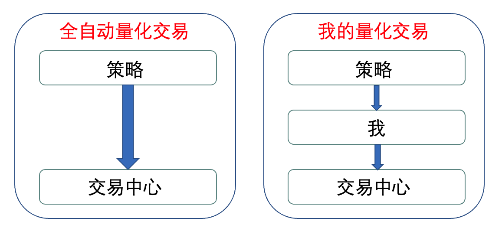
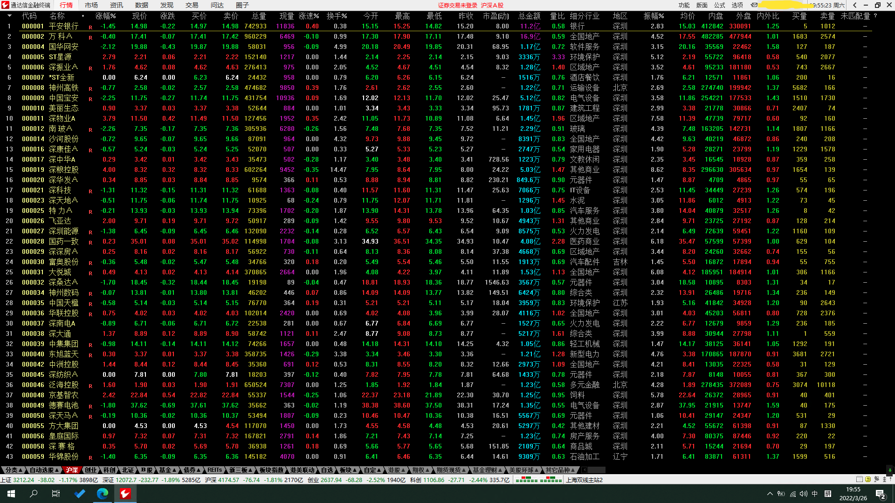
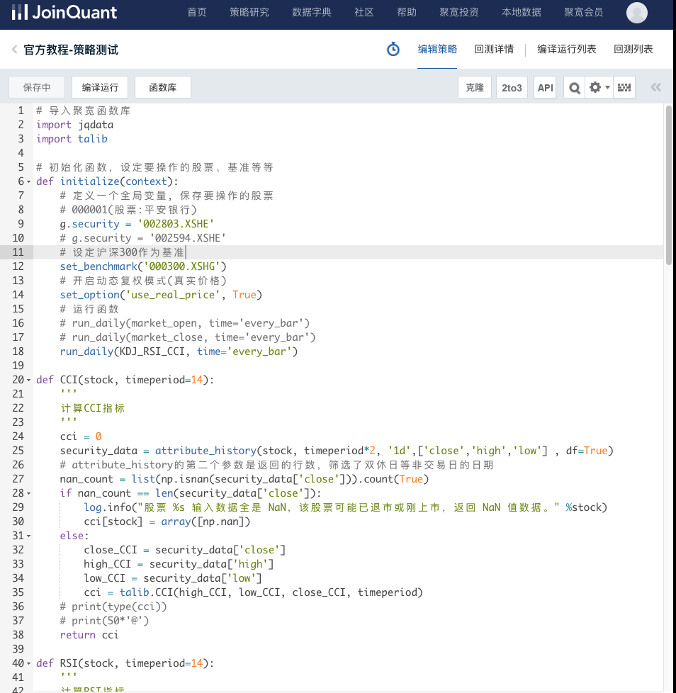

从2019年开始就已经开始在探索基金、股票分析量化平台，但是由于个人能力和时间有限，一直没有做出来，现在炒股炒了两年，虽然交易次数不多，但是也积累了一些经验想记录一下。主要是我对量化交易的一些思考，还有量化平台的选择。
量化交易
对于什么是量化交易这个问题，我时常思考很久，也查看很多国内外网上的帖子，但是有些帖子写的比较深奥，且自己没有实践体会过，所以理解不了。
简单来说，量化就是用policy（程序、数学模型），来决定交易的品种、数量、方向和时机。但是最近很多公众号之类的（营销号）过于“推崇”量化和机器学习了，到处都是量化交易的广告，点进去看，发现居然没有讲交易的，有点过于神化机器学习了，以为机器学习可以解决一切问题。然而对于我们这种“深度学习圈内人”来说，这样的操作不就是数据分析嘛，换句话说，他们这种套路搞量化交易，肯定是在骗钱，要是他们能稳定赚钱，何必还来卖课呢。
个人以为量化交易的核心仍然是“交易”，脱离了这个核心，充其量只能算得上股票数据分析。因此，我也是拿着十几万块，实盘操作了两年，不过其实交易次数很少，去年主要是做比亚迪的波段，由于比亚迪股票比较强势，所以盈利还不错。今年到截至写这篇文章仍然是亏本的，通过学习一些指标，例如KDJ，RSI，CCI做了一个选股策略，然而，由于乌克兰和俄罗斯打仗，石油价格暴涨，我现在还是亏本的。。。经过实盘的交易，我10万亏几万都无所谓的，可能资金太小了，所以心态还比较好吧，不过经过这次测试发现，还是不能简单的通过几个指标来选股，而是要深层次挖掘股价涨跌与因子的关系，这里我介绍一下因子（factor），如英文的意思，其实很好理解，就是影响因素。
所以，哪怕我以后用量化平台，自己挖掘策略，即使模拟盘跑的不错，我也不会盲目跟着policy走，而是想要先评估一下股票的基本面。我把我这种操作方式也归结于量化交易。

量化交易平台
自研的平台
之前做过很多尝试，想要自己搞一个量化分析平台，但是最大的问题还是数据采集和清洗的问题。调研过很多解决方案
数据采集可以使用一些python的库，如akshare，把常用的财经软件的接口封装好了，其本质封装的还是财经网站本身的接口，而不是采集他们本地存储的一台股票数据服务器，这会造成潜在的数据问题：
- 数据缺失和错误
- 数据正确性验证困难
- 本地构建数据存储库，占用资源
- 本地服务器down了，如何修复程序
总之，需要自己开发的自动化功能太多了。于是就想借用现有的量化平台，至少数据源不用担心了，主要的开发工作也可以聚焦于后续的策略开发上。
传统看盘软件
以通达信为代表的软件，其本身的功能很强大，而且数据源质量好，最大的优势是计算快，相比于其他的看盘软件来说。

网上也有很多视频平台博主使用该软件做的量化交易，他主要用来验证网上传播的那些指标到底有没有效果。
通达信可以自己编写公式，但是回测系统不是很好，用来筛选股票非常方便，而且可以将设定时间间隔自动选股。未来考虑将编写的策略翻译成通达信平台的选股公式，方便用于实盘交易。
如果未来不使用机器学习的话，该平台肯定是足够了，而且该平台还比那些量化平台好用。如果要使用机器学习算法的话，该平台显然是不够的。
可以写脚本的量化平台
我现在准备使用的是JoinQuant平台，才用了几天，也不知道好坏，其他一些平台我也注册过，反正都是大同小异的。这边后续再补充下平台是否好用吧。

他这个分两个平台，一个是策略撰写平台，程序里提现就是user_code.py，可通过报错基本看出其后台的框架。估计代码量不大的。平台本身定义好了几个固定名字的函数，需要注意下。文档写的很不好，索引很不方便，不像个专业开发团队做的工作。